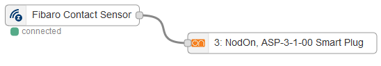

Contact sensors
The Fibaro Door/Window Sensor
Install Z-Wave Stuff
First, you need to buy Z-Wave USB Key that you should plug on the pi in any USB available port and some sofware easy to install using the import node menu, as described in the Z-Wave introduction tutorial.
Get the Z-Wave Contact sensor
We use the Fibaro Door/Window Sensor http://www.fibaro.com/fr/syst%C3%A8me-fibaro/door-window-sensor
The User guide can be found here: http://manuals.fibaro.com/en/door-window-sensor.
Reset the sensor
Resetting the Fibaro Door/Window Sensor There is one way to reset the Fibaro Door/Window Sensor. The procedure cleans its EPROM memory, including the main controller and Z-Wave network data. To reset the Fibaro Door/Window Sensor please follow below instructions:
- Take off the Sensor’s cover and remove battery. Make sure the TMP button is intact.
- Touch the Sensor’s body with a magnet,
- Insert the battery,
- Within 2 seconds remove the magnet from the Sensor’s body, the LED will turn off. Wait 3 seconds until the LED starts blinking.
- Remove the battery
- Re-install the battery,
- Reset will be confirmed by LED blinking
Register the sensor
This steps add the sensor to the Z-Wave USB key.
-
To initiate the Z-Stick inclusion-Mode, unplug the it from the USB connector and then tap the button. (The LED will blink slowly.). Now your dongle has its inclusion mode activate. While in Inclusion-Mode, the Z-Stick is in perpetual add/inclusion. There is no need to press the button on the Z-Stick again to include each new device.
-
Be sure that Sensor’s cover is closed.
-
The Fibaro Door/Window Sensor is added to the network by quickly pressing the TMP button three times (the button is located on the underside of the device and inside the casing): the LED on the Z-Stick will blink fast during a network neighbor discovery and stay solid for 3 seconds to indicate successful inclusion of the sensor into the dongle’s memory. The LED will then return to blinking slowly, indicating readiness for further device inclusions. The sensor should be closed (and powered) to succeed - One of the buttons needs to be pressed constantly (by closing the lid or by installing it on a wall). notice that If the sensor is already included, nothing happens.
- Wait until the dongle stop blinking.
- Install the sensor’s cover in desired location.
- Wake it up by triple clicking the TMP-button.
Nodes in the visual editor
In the Z-Wave tab you can now find the dedicated nodes, one for each functionality:
The most useful one is the orange one, used to switch the plug on or off.
Beware that it may takes minutes before the nodes to appear. Reboot may help. Clicking three times the TMP button may also help.
Use the sensor
You can directly wire a Sensor:

This node understand intents and thus can be juste wired to another nodes that also understands intents.